OncoGO-CRC, corrida v3.3
Ningún resultado de esta tesis sirve para decidir sobre un paciente.
No se detecta diferencia; 166 proteínas son equivalentes
La separación del suero entre cáncer y colonoscopia negativa se explica por la calidad de muestra.
H1: rechaza_h1. Frágil a la normalización: False.
H5: refuta. H7: refuta. H10: descriptiva, 5 proteínas específicas, fase 1.
Controles del tejido
- CA1: pasa, observado -2.314058303758073
- AQP8: falla, observado no_evaluable
- SLC26A3: falla, observado no_evaluable
- GUCA2A: falla, observado no_evaluable
Con AQP8, SLC26A3 y GUCA2A en falla, las etiquetas de tumor y mucosa no quedan confirmadas.
Lo que esta corrida no cierra
- Variables que H7 lista como faltantes: especificidad_tisular, origen_celular_h6, presencia_en_vesiculas_pxd033236, esm2_t12_35M_pca5, tmbed_helices_tm, tmbed_peptido_senal, papier_2024.
- El multiverso calculado tiene 48 celdas. H5, H7 y H10 no dependen de estas celdas del suero. No se recalculan en cada una.
Figuras
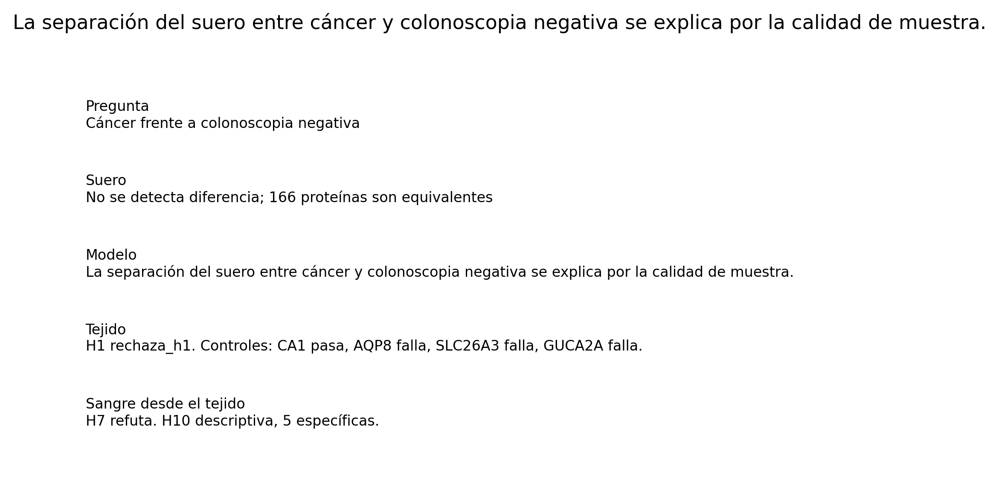
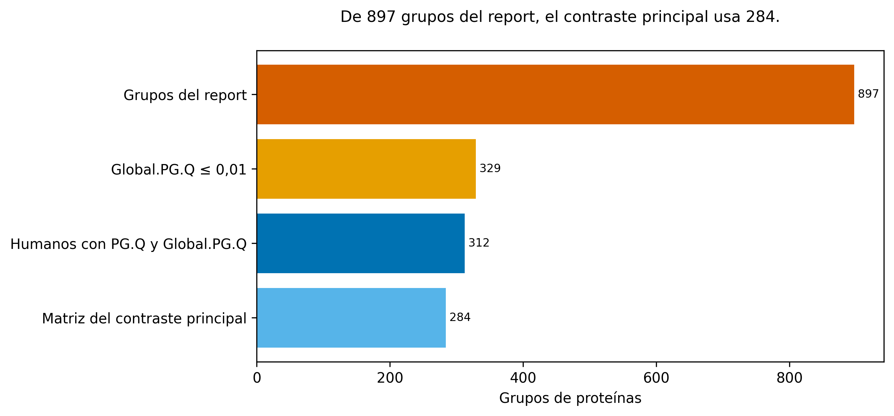
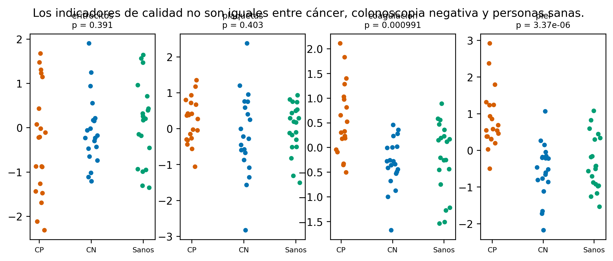
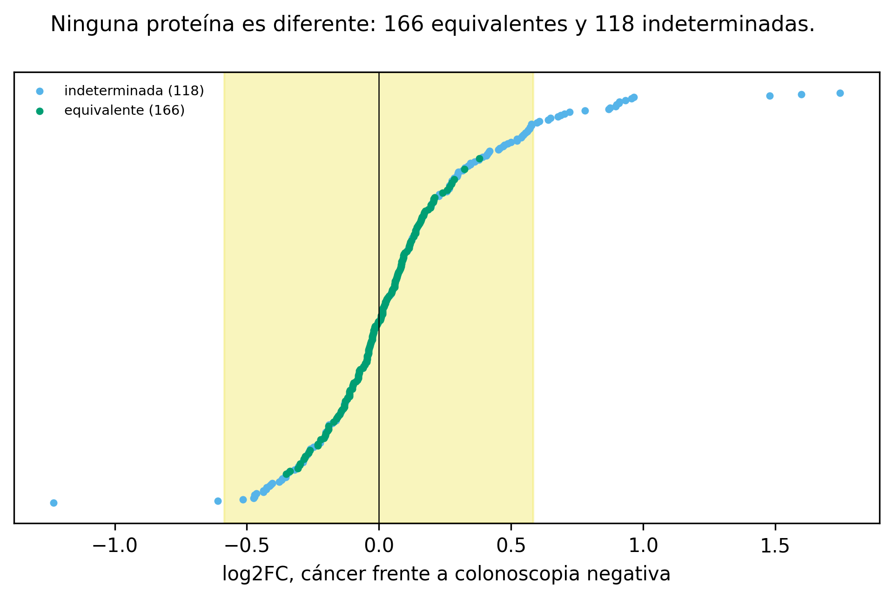
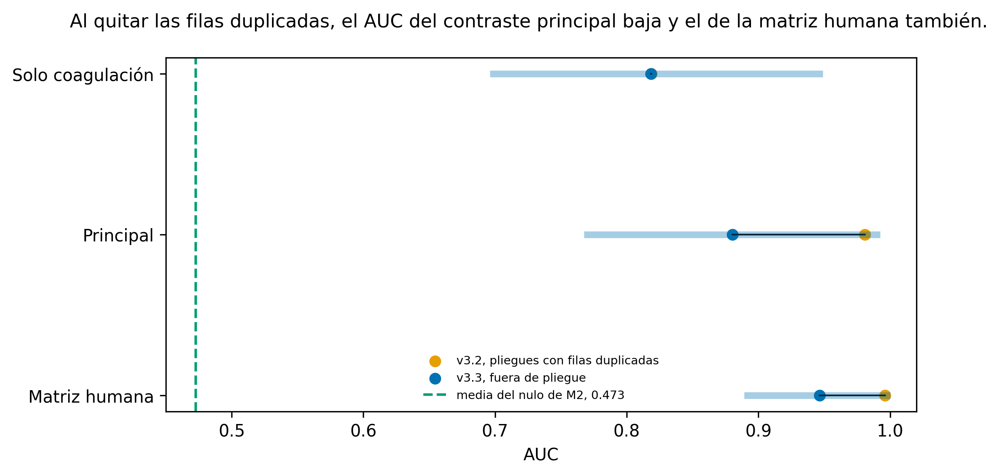
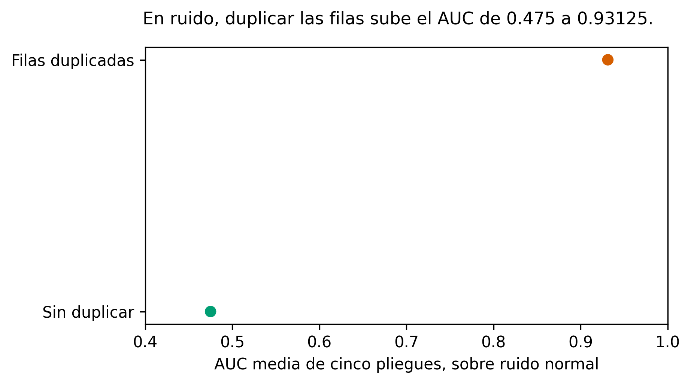
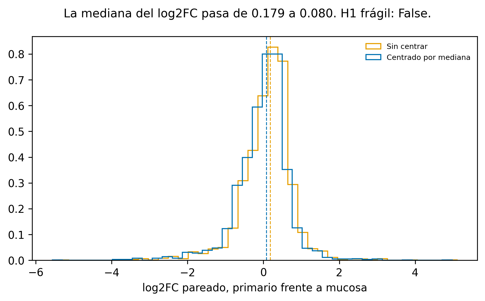
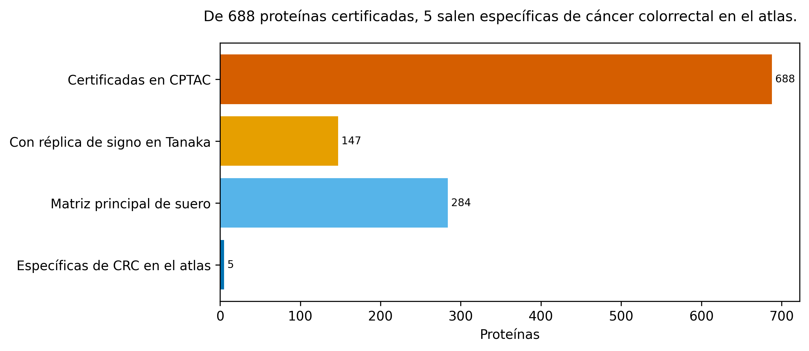
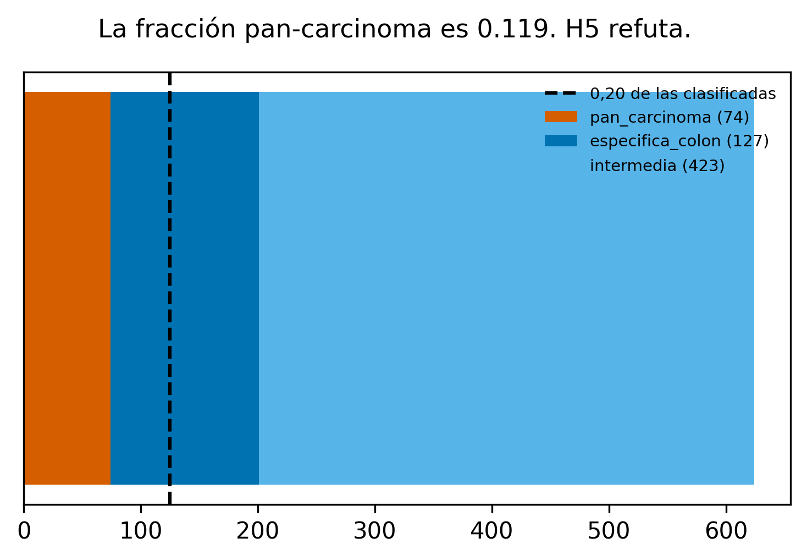
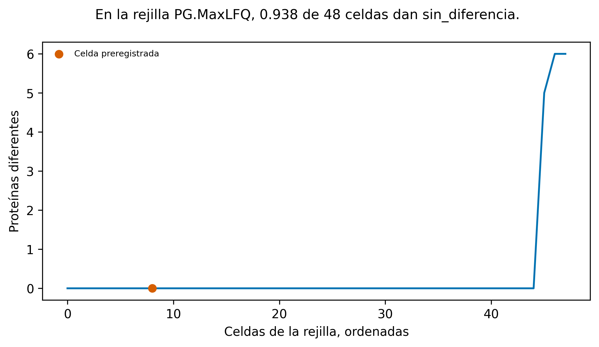
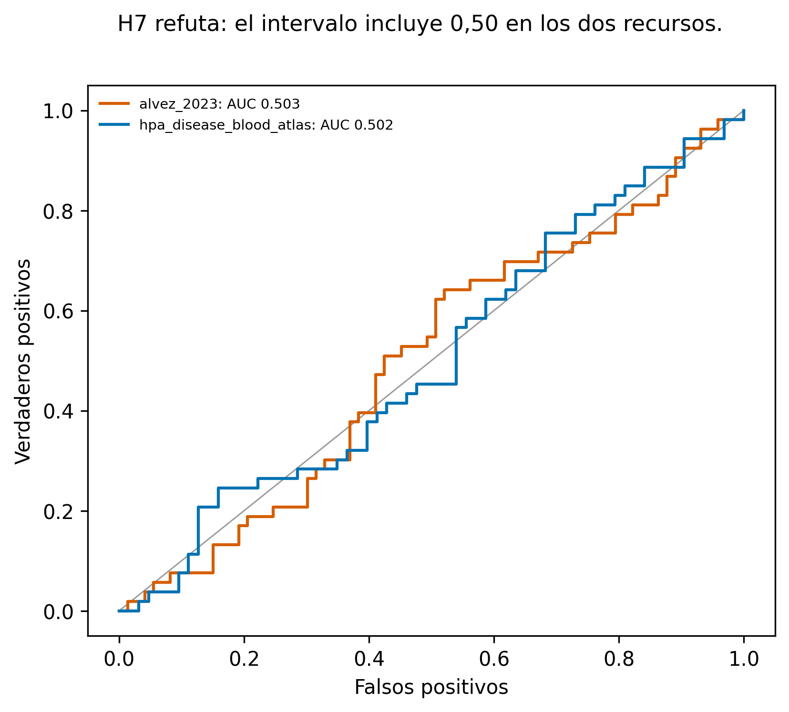
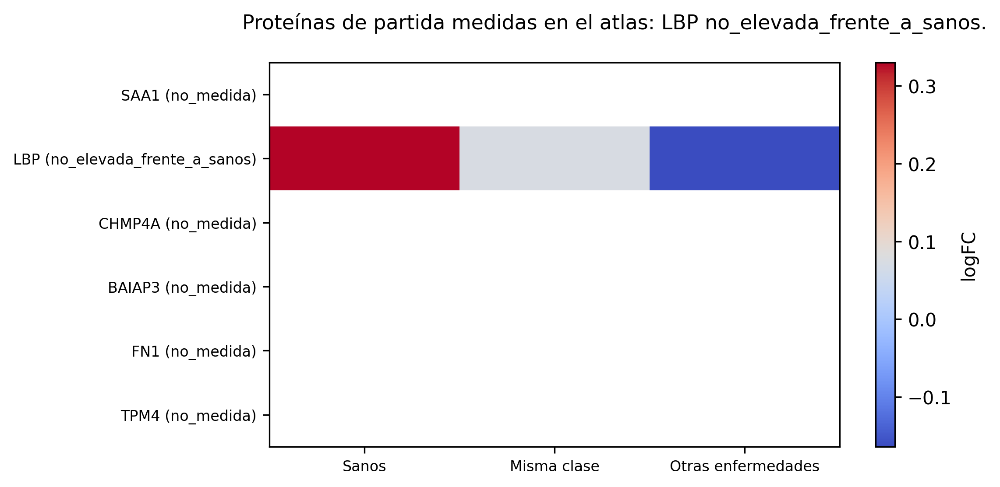
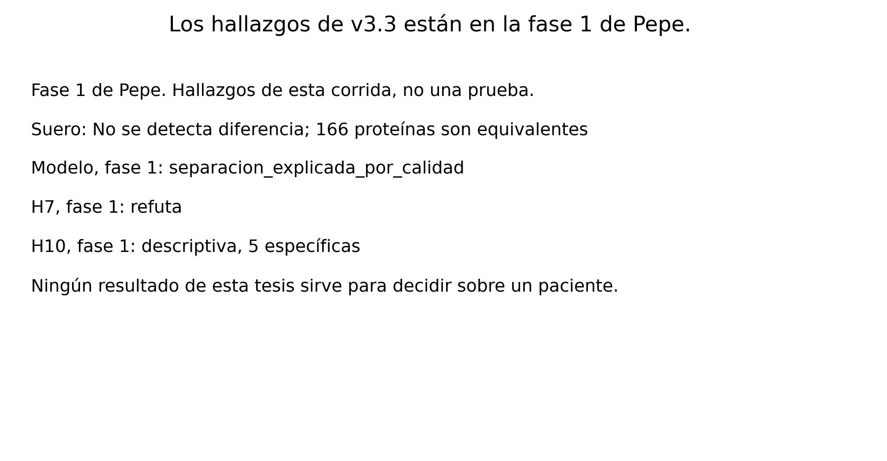
Qué cambió frente a v3.2
| Cifra | v3.2 | v3.3 | Causa |
|---|---|---|---|
| n_principal | 205 | 284 | 2.1 |
| frase_suero | No se detecta diferencia; 105 proteínas son equivalentes | No se detecta diferencia; 166 proteínas son equivalentes | 2.1 |
| principal.crc_frente_a_colonoscopia_negativa.n | 205 | 284 | 2.1 |
| principal.crc_frente_a_colonoscopia_negativa.equivalente | 105 | 166 | 2.1 |
| principal.crc_frente_a_colonoscopia_negativa.indeterminada | 100 | 118 | 2.1 |
| principal.crc_frente_a_sanos.n | 205 | 284 | 2.1 |
| principal.crc_frente_a_sanos.diferente | 2 | 3 | 2.1 |
| principal.crc_frente_a_sanos.equivalente | 104 | 154 | 2.1 |
| principal.crc_frente_a_sanos.indeterminada | 99 | 127 | 2.1 |
| principal.colonoscopia_negativa_frente_a_sanos.n | 205 | 284 | 2.1 |
| principal.colonoscopia_negativa_frente_a_sanos.diferente | 0 | 1 | 2.1 |
| principal.colonoscopia_negativa_frente_a_sanos.equivalente | 128 | 194 | 2.1 |
| principal.colonoscopia_negativa_frente_a_sanos.indeterminada | 77 | 89 | 2.1 |
| primario_frente_a_mucosa | 89/90 | 147/147 | 2.3 |
| metastasis_hepatica_frente_a_mucosa | 69/82 | 116/143 | 2.3 |
| primario_frente_a_mucosa_no_pareado | 95/98 | 155/157 | 2.3 |
| h1_fragil_a_normalizacion | no_calculado | False | 2.4 |
| mediana_log2fc_pareado | no_calculado | 0.1792660486145855 | 2.4 |
| mediana_log2fc_pareado_centrado | 0.1792660486145855 | 0.08045971886685321 | 2.4 |
| deming_intercepto | 0.771543426701222 | 0.6503090482500555 | 2.4 |
| ml.M1_proteinas_filtrada_humana.auc_oof_media | 0.99625 | 0.9466249999999998 | 2.2 |
| ml.M2_proteinas_principal.auc_oof_media | 0.9809375 | 0.88025 | 2.2 |
| ml.M4_solo_coagulacion.auc_oof_media | 0.81875 | 0.818375 | 2.2 |
| ml.M4_solo_coagulacion.p_permutacion | 0.000999000999000999 | 0.001998001998001998 | 2.2 |
| titular_ml | no_calculado | separacion_explicada_por_calidad | 2.2 |
| h5.estado | no_disponible | refuta | 2.5 |
| h5.fraccion_pan_carcinoma | no_calculado | 0.11858974358974358 | 2.5 |
| h10.estado | calculado | descriptiva | 2.6 |
| h10.n_especificas_crc | 0 | 5 | 2.6 |
| h7.estado | no_evaluable | refuta | 2.7 |
| control.CA1.pasa | no_evaluable | pasa | 2.3 |
| control.AQP8.pasa | no_evaluable | falla | 2.3 |
| control.SLC26A3.pasa | no_evaluable | falla | 2.3 |
| control.GUCA2A.pasa | no_evaluable | falla | 2.3 |
Lectura del 31 de octubre, histórica. Simulador del intervalo de una AUC.
Los números de esta página los escribe scripts/v3/exportar_sitio.py desde results/v3_3/.